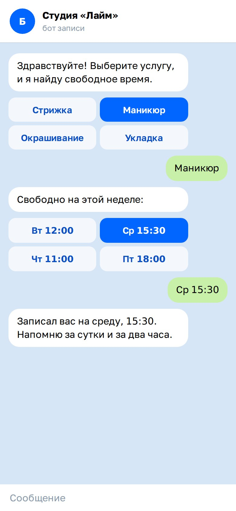

Telegram-бот записи для салона
Концепт диалога записи: выбор услуги, времени и подтверждение. Показывает, как бот снимает рутину с администратора.


Что показывает концепт
- Кнопки вместо текста. Клиент выбирает услугу и время в два касания.
- Напоминания. Бот сообщает о записи заранее.
- Передача человеку. Сложные случаи уходят администратору.
Контакты
Опишите задачу в паре предложений — вернёмся с планом, сроками и оценкой.
© 2026 Antviz